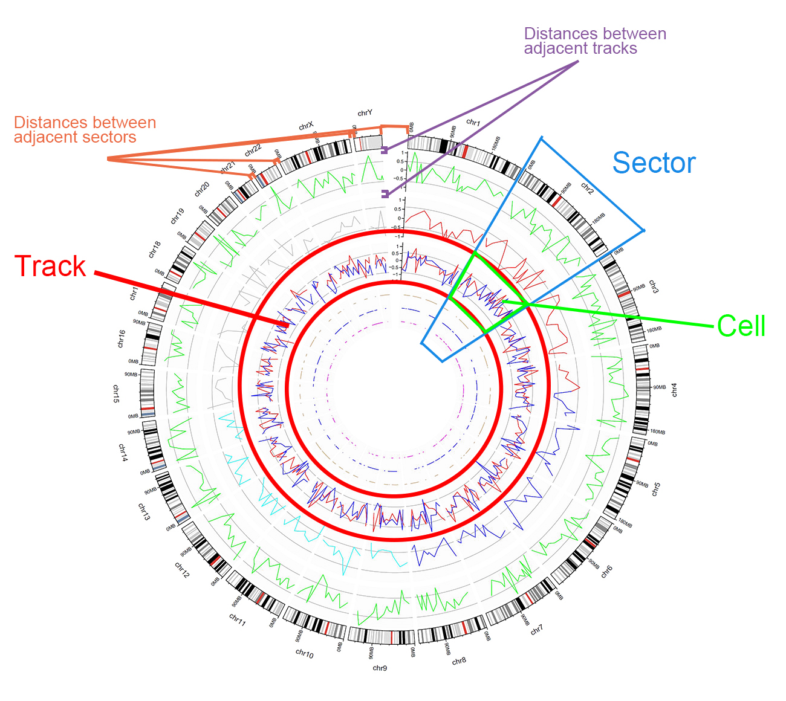
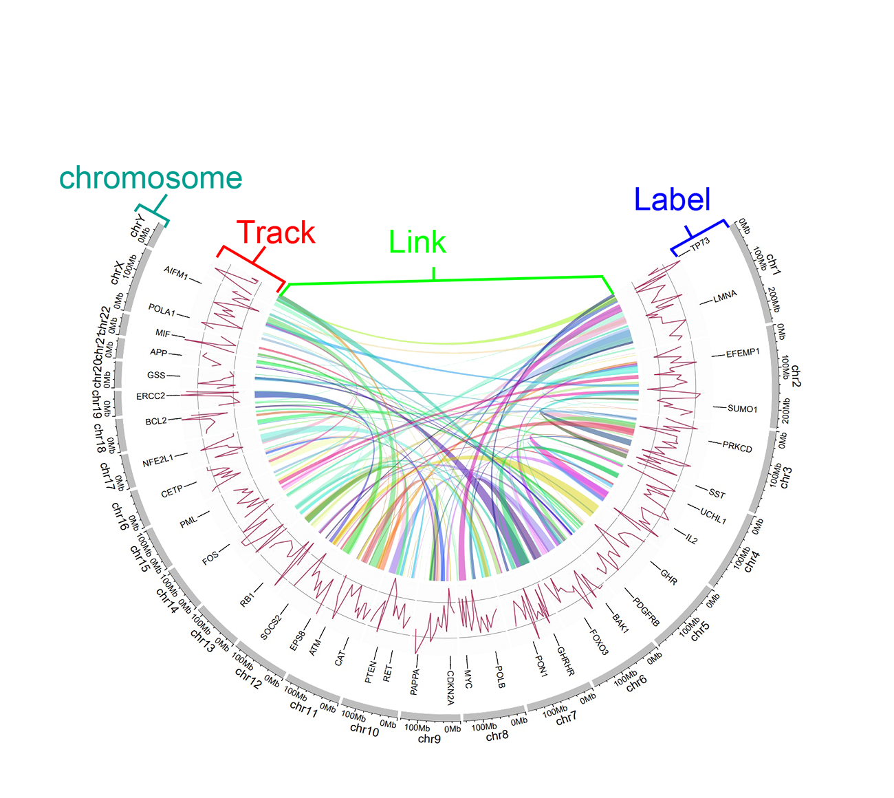

The Circos diagram was born in 2009, when it was published as a drawing tool in Genome Research, and its author was Martin Krzywinski. Since then, it has appeared in internationally renowned journals, such as Nature, Science, and Cell.
Circlize is a software package for R, published by Zuguang Gu et al in 2017, since then R language can also be used to draw Circos diagrams.
shinyCircos was released by Wen Yao et al in 2017 and has been recognized by many users since its release. In order to further facilitate the use of users, we developed shinyCircos-V2.0, and now you see the new version shinyCircos, thank you for your use, and welcome your suggestions Valuable advice to our mailbox(gentelmanwang@gmail.com)
The basic structure of a Circos diagram is as follows:

The structure of a Circos diagram

Circos diagram track type